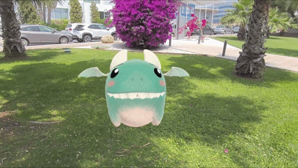
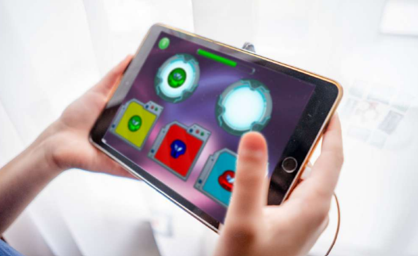
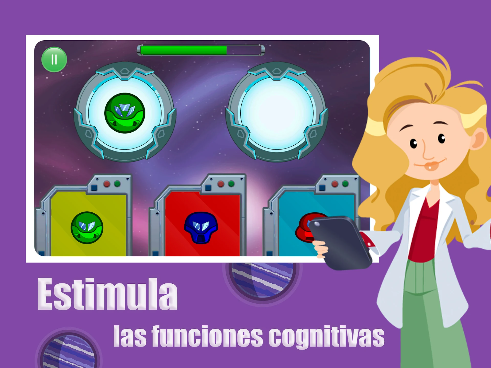

Mixcare
A mixed reality experience using biosensors and biofeedback to support patients managing anxiety before surgery.
A mixed reality experience using biosensors and biofeedback to support patients managing anxiety before surgery.

A mixed reality platform using gamification and biofeedback for mental health and physical and cognitive rehabilitation.

An ITI metaverse project exploring collaborative immersive environments and new forms of digital interaction.
Connected industrial interfaces, production control and real-time systems for smart tooling workflows.

A Class IIa certified medical device using AI-powered gameplay to support children with ADHD.

An AI-powered serious game featuring adaptive minigames for children's cognitive development.